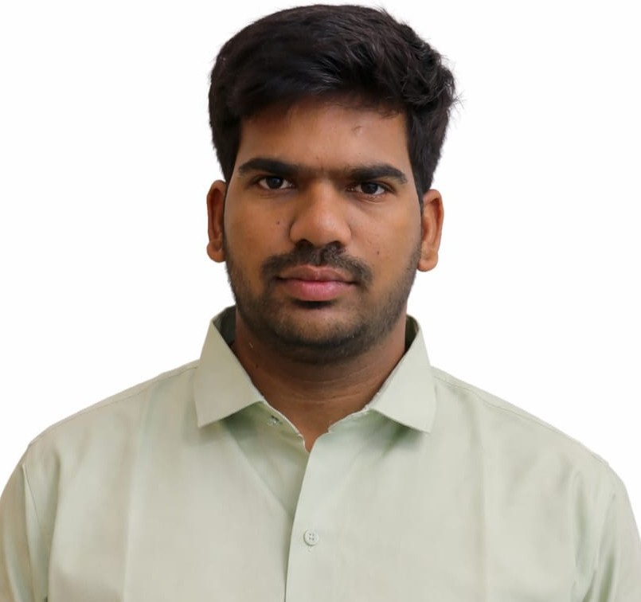

01 · SCIENTIFIC ML
Zero-Shot Epistatic Diffusion
A multi-task deep ensemble for protein fitness regression and Pfam classification across the ProteinGym benchmark.
Results: Spearman ρ 0.785 · Pearson r 0.759 · R² 0.523 · AUROC 0.702
Aspiring Data Scientist | Machine Learning | AI Research
I’m an M.Tech Data Science student passionate about building intelligent solutions using machine learning, deep learning, NLP, computer vision, and multimodal AI.

A focused portfolio built around my academic research, technical projects, and the skills I’m developing for a career in Data Science and AI.
“I enjoy turning complex data and machine learning ideas into systems that are useful, understandable, and reliable.”
My interests span Machine Learning, Deep Learning, NLP, LLMs, Computer Vision, Data Science, and Multimodal AI. My current M.Tech research explores how uncertainty and modality reliability can improve multimodal disaster understanding.
A practical stack covering programming, machine learning, analytics, visualization, and development.
Languages and everyday development.
Modeling and deep learning workflows.
Analysis, visualization, and BI.
Development and research tooling.
Researching reliable multimodal learning for disaster understanding on social media.
A framework combining DeBERTa-v3 text representations and CLIP ViT-B/32 image representations with reliability estimation, uncertainty-aware semantic gating, contrastive alignment, and uncertainty-guided cross-modal attention.
Academic and practical work across scientific ML, cybersecurity, and frontend development.
A multi-task deep ensemble for protein fitness regression and Pfam classification across the ProteinGym benchmark.
Blacklist-independent phishing detection using 34 handcrafted URL features and comparative classical ML models.
A responsive recreation of a Shopify-style commerce platform focused on polished frontend sections, product showcases, and UI presentation.
Completed an 8-week virtual internship covering Salesforce Fundamentals, Organizational Setup, Sales Cloud, Service Cloud, Process Automation, Flow & Chatter, Security, Reports & Dashboards, and Data Management.
Member of the ACM Student Chapter during B.Tech and volunteer in the organization and conduct of SPARDHA, the annual technical fest.
Curated credentials relevant to technology, analytics, cloud, programming, and professional development.
8-course professional certificate covering Python, Linux, SQL, SIEM, threats and vulnerabilities.
Jan–Mar 2024 · 63% consolidated score.
AWS Academy Graduate · 20-hour credential.
Business intelligence and data visualization credential.
Technical skills assessment credential.
Technical skills assessment credential.
Interested in Data Science, Machine Learning, AI Engineering, or research opportunities? I’d be happy to connect.